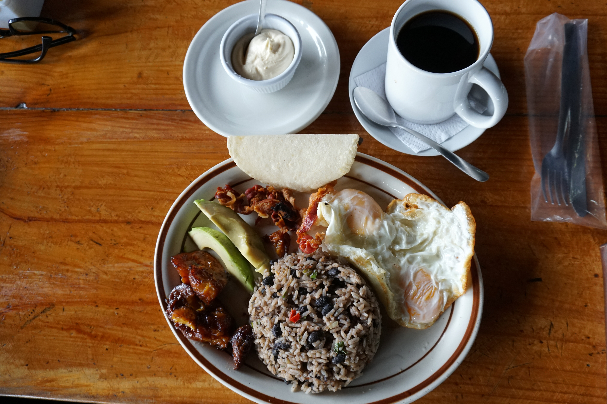

Gallo Pinto

A traditional Costa Rican breakfast and my favorite breakfast recipe.
When you serve it, you can add up the Costa Rican famous Lizano sauce (kind of an English sauce)
that brings up the gallo pinto's flavor.
Ingredients
- Olive oil
- Onio chopped
- Green bell pepper chopped
- Celery
- olive oil
- White rice and beans cooked
- Salt
Steps
- Heat oil in a frying pan over medium heat
- Add onion, bell pepper, celery, and garlic and saute until softened, 5 to 7 minutes
- Stir in black beans with their juices, salt, and pepper
- Saute until some of the liquid evaporates, 3 to 5 minutes
- Stir in rice.
- Cover and let simmer until vegetables are soft and flavors have melded, about 15 minutes.